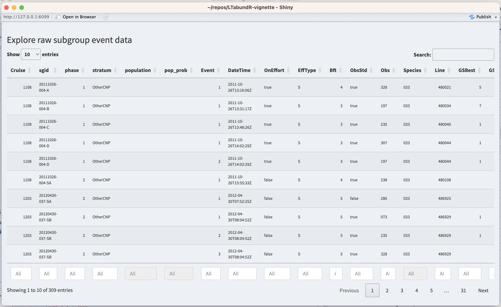
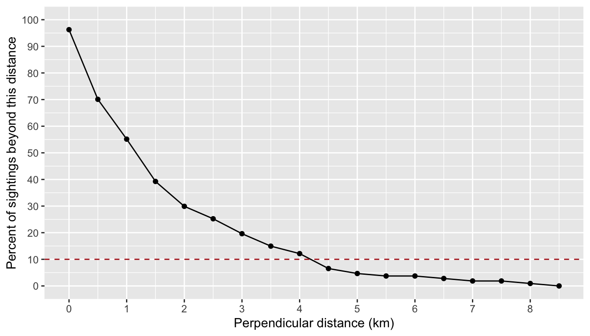
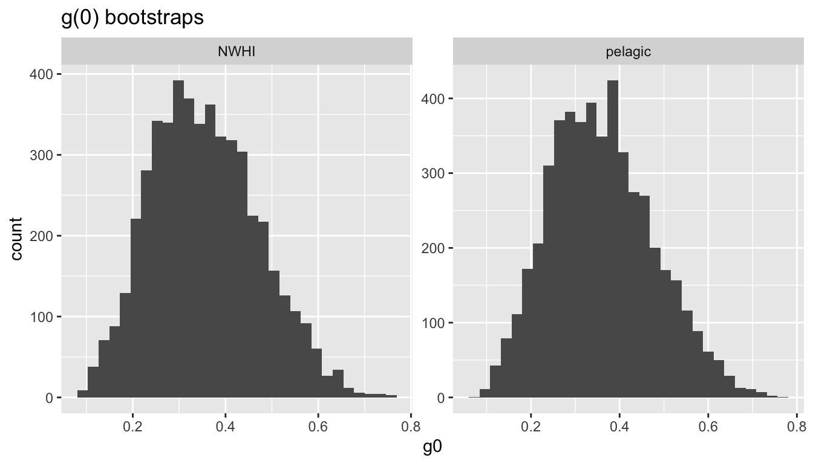
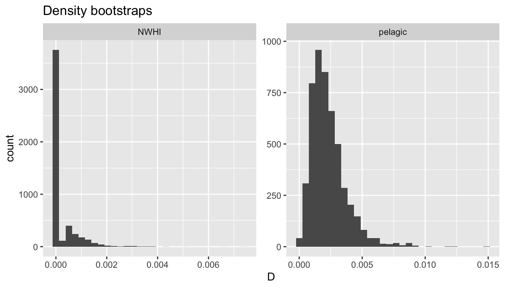

11 Subgroup-based analysis
False killer whales (Pseudorca crassidens) are rare and occur in dispersed subgroups, which complicates conventional distance sampling approaches to line-transect analysis (Bradford et al. 2014). To better estimate their abundance in Hawaiian waters, the Pacific Islands Fisheries Science Center initiated a sub-group protocol referred to as the “PC Protocol”, a reference to the species’ scientific name. Data collected using the PC Protocol is then analyzed using a subgroup-based analytical approach (Bradford et al. 2014, 2020).
An additional complication is that false killer whales in Hawaiian waters belong to three discrete populations – the Main Hawaiian Islands insular population, the Northwestern Hawaiian Islands (NWHI) population, and a pelagic population – whose ranges partially overlap, which means that population assignment cannot always be based simply on the geographic location of sightings. When geographic assignment of population is not possible, biopsy-sampled genetics or photo-identification inference, if available, is used to assign each sighting to a population post-hoc.
To accommodate these special circumstances for false killer whales (and potentially other species with subgroup structure) with an appropriate balance of flexibility and efficiency, LTabundR includes a function named lta_subgroup(), whose use will look something like this:
lta_subgroup(df_sits,
truncation_distance,
ss,
density_segments,
density_das,
density_sightings,
Rg0= NULL,
cruz10 = NULL,
g0_spp = NULL,
g0_truncation = NULL,
g0_constrain_shape = FALSE,
g0_jackknife_fraction = 0.1,
abundance_area = NULL,
iterations = 5000,
output_dir = NULL,
toplot = TRUE,
verbose = TRUENote that there are several required inputs (without any defaults) as well as many optional inputs (with defaults provided).
We will step through each of these inputs below, using a case study in which we estimate the abundance of the pelagic false killer whale population in the Hawaiian EEZ for 2017 (Bradford et al. 2020).
Reminder on data processing
LTabundR has been designed to make a first-pass attempt at processing subgroup data resulting from the PC protocol. We recommend that you review the details of how subgroup data are processed within the LTabundR framework. For convenience, below we provide the minimum data processing code needed to reproduce the analysis we present here.
# Strata to use
data(strata_cnp)
strata_cnp %>% names
[1] "HI_EEZ" "OtherCNP" "MHI" "WHICEAS"
[5] "Spotted_OU" "Spotted_FI" "Spotted_BI" "Bottlenose_KaNi"
[9] "Bottlenose_OUFI" "Bottlenose_BI" "nwhi_fkw" "mhi_fkw"
my_strata <- strata_cnp[c(1, 2, 11, 12)]
my_strata %>% names
[1] "HI_EEZ" "OtherCNP" "nwhi_fkw" "mhi_fkw" # Survey-wide settings
data(species_codes)
data(ships)
data(group_size_coefficients)
survey <- load_survey_settings(
out_handling = 'remove',
min_row_interval = 2,
max_row_interval = 3600,
max_row_km = 100,
km_filler = 1,
speed_filler = 10 * 1.852,
segment_method = "equallength",
segment_target_km = 150,
segment_max_interval = 24,
segment_remainder_handling = c("segment"),
ship_list = ships,
species_codes = species_codes,
group_size_coefficients = group_size_coefficients,
smear_angles = FALSE)# Cohort-specific settings
all_species <- load_cohort_settings(
id = "all",
probable_species = FALSE,
sighting_method = 0,
cue_range = 0:7,
school_size_range = c(0, 10000),
school_size_calibrate = TRUE,
calibration_floor = 0,
use_low_if_na = TRUE,
io_sightings = 0,
geometric_mean_group = TRUE,
truncation_km = 7.5,
beaufort_range = 0:6,
abeam_sightings = FALSE,
strata_overlap_handling = c("smallest"),
distance_types = c('S','F','N'),
distance_modes = c('P','C'),
distance_on_off = TRUE)# Gather settings
settings <- load_settings(strata = my_strata,
survey = survey,
cohorts = list(all_species))
# Process data
cruz <- process_surveys(das_file,
settings)This cruz object has the geostrata relevant to the subgroup analysis we are replicating here:
cruz$strata
stratum area
1 HI_EEZ 2474595.8 [km^2]
2 OtherCNP 33817779.1 [km^2]
3 nwhi_fkw 449375.6 [km^2]
4 mhi_fkw 171283.8 [km^2]The all cohort for this cruz object has a subgroups slot…
… which has three slots inside it:
The events slot is the closest thing to raw DAS data: each row is a subgroup size estimate from a single observer. The subgroups slot has a line for each subgroup, with the subgroup size averaged across observers. The sightings slot has a line for each sighting within each phase of the PC protocol, with group size representing the sum of all subgroups in the respective phase.
Here are all the columns within the events slot:
cruz$cohorts$all$subgroups$events %>% names
[1] "Cruise" "ship" "Date" "DateTime"
[5] "Lat" "Lon" "OnEffort" "EffType"
[9] "Bft" "SwellHght" "RainFog" "HorizSun"
[13] "VertSun" "Glare" "Vis" "ObsL"
[17] "Rec" "ObsR" "ObsInd" "SightNo"
[21] "Obs_Sight" "Species" "Line" "SubGrp"
[25] "Event" "GSBest" "GSH" "GSL"
[29] "Angle" "RadDist" "seg_id" "stratum_HI_EEZ"
[33] "stratum_OtherCNP" "stratum_nwhi_fkw" "stratum_mhi_fkw" "stratum"
[37] "ObsStd" "Obs" "PerpDist" "sgid"
[41] "sitid" "phase" "population" "pop_prob" Note that each subgroup has automatically been assigned to a phase of the PC protocol:
And that each subgroup has been given a blank placeholder of NA in the population column:
Manual data updates
In most cases the processed subgroup data will need to be reviewed carefully and it is probable that some manual edits will be necessary. To facilitate that process, LTabundR offers functions that allow the user to review the processed data, stage reproducible edits using code, and re-process the data to apply those edits.
In short, here are the functions related to each step in this editing workflow:
To review the default processing applied to the subgroup data when you ran
process_surveys(), use the functionsubgroup_explorer().To edit the way subgroup data are processed – e.g., assigning detections to certain populations or changing the phase of the PC protocol for a detection – use the functions
subgroup_populations()andsubgroup_edits(). Collect the outputs of those functions into alist, then …To re-process the subgroup data with your
listof staged edits, runprocess_subgroups()and pass yourlistto the input namededits.
We provide details for each of those steps in the following subsections.
Reviewing processed subgroup data
For reviewing processed subgroup data, use the subgroup_explorer() function.
This function launches an interactive Shiny dashboard for exploring the processed subgroups events. It will look like this:

To stage code for reproducible edits to the processed data, two functions are available: subgroup_populations() and subgroup_edits(). We review those functions below, then show how to apply those coded edits by re-processing the subgroup data.
Staging subgroup edits
subgroup_populations()
The function subgroup_populations() allows you to batch-assign subgroup events to certain populations based upon spatial polygons. Its use looks like this:
In this function, the populations input is a named list of polygon coordinates, very similar to the way strata are supplied in the settings for process_surveys(). Here’s an example of what that list could look like if you chose to use some of the strata in your cruz settings:
# Pull polygons from settings
mhi_fkw <- cruz$settings$strata$mhi_fkw
nwhi_fkw <- cruz$settings$strata$nwhi_fkw
# Example of data structure
mhi_fkw %>% head
Lon Lat
1 -155.6959 18.26111
2 -155.6966 18.26112
3 -155.6995 18.26118
4 -155.7002 18.26120
5 -155.7016 18.26123
6 -155.7023 18.26125
# Create populations object
populations <- list(MHI = mhi_fkw,
NWHI = nwhi_fkw)The name of each list slot will be treated as the name of the population occurring within the respective polygon. When we used these polygons as the population boundaries, we get the following variety of population assignments and probabilities:
pops <-
subgroup_populations(populations,
cruz,
cohort = 'all',
default_pop = 'pelagic')
pops$population %>% table
.
MHI MHI;NWHI NWHI pelagic
127 47 74 141
pops$pop_prob %>% table
.
0.5;0.5 1
47 342 When you run the function subgroup_populations(), it returns a data.frame of instructions in which each row is a population assignment for a subgroup event:
subgroup_populations(populations,
cruz,
cohort='all',
default_pop = 'pelagic',
verbose=FALSE) %>% head
# A tibble: 6 × 5
edit cohort sgid population pop_prob
<chr> <chr> <chr> <chr> <chr>
1 population all 1108-20111026-004-A pelagic 1
2 population all 1108-20111026-004-B pelagic 1
3 population all 1108-20111026-004-C pelagic 1
4 population all 1108-20111026-004-D pelagic 1
5 population all 1108-20111026-004-D pelagic 1
6 population all 1108-20111026-004-SA pelagic 1 This data.frame is formatted exactly as needed to pass these edits to the re-processing routine process_subgroups(), as shown below. The column population contains the population assignment, and pop_prob contains the probability that the event is assigned to this population. The latter will be 1.0 unless the event occurs in overlapping polygons, in which case the population column will display all eligible population names separated by a semicolon (e.g., if there are two overlapping polygons named "MHI" and "NWHI", the population will be shown as "MHI;NWHI"), and the pop_prob column will display an equal probability of assignment for each of those populations (e.g., "0.5;0.5"). If an event does not occur within any of the polygons provided, it will be given the default_pop name, with a default pop_prob of 1.0.
Note that if your data do not have population structure, you can skip this step and proceed.
Stage specific edits
To manually stage specific edits to the processed subgroup data, use the subgroup_edits() function. Its use will look something like this, though the latter inputs depend on the type of edit you are staging:
subgroup_edits(cohort = 'all',
sgid = '1108-20111026-004-A',
...) # remaining inputs depend on the type of editThe input sgid refers to the unique subgroup ID assigned, which you can find when you look at the subgroup data with subgroup_explorer() (described above). You can supply a single sgid or a vector of `sgid values.
This subgroup_edits() function returns a list of staged edits that can be passed directly to the subgroup re-processing routine we explain further below.
Edit population
If you need to fix population assignments on a case-by-case basis after using the batch-assignment function, subgroup_populations() discussed above, use the following syntax:
subgroup_edits(cohort = 'all',
sgid = '1108-20111026-004-A',
population = 'MHI;NWHI',
pop_prob = '0.5;0.5')The population input takes a character vector, with length of either 1 or the same as sgid, indicating the new population(s) to assign the sgid(s). If you want a sgid to be eligible for multiple populations, separate the population names with a semicolon. Both this input and pop_prob needs to be provided in order for the edit to work properly.
The pop_prob input takes a vector, with length of either 1 or the same as sgid and values ranging between 0 and 1, indicating the probability of each population assignment for the sgid(s). If you want a sgid to be eligible for multiple populations, provide a character vector and separate the probabilities by a semicolon, e.g., "0.5;0.5". Both this input and population need to be provided in order for the edit to work properly.
Edit phases
If you need to fix the phase assignment for subgroup event(s), use the following syntax:
The input phase takes a numeric vector, with length of either 1 or the same as sgid, indicating the new phase to assign the sgid(s). If you wish to remove a phase assignment for a sgid, use NA.
Edit primary observer
If you want to control whether a subgroup event was seen by the primary/standard observer (the column ObsStd is either TRUE or FALSE), use the following syntax:
The input ObsStd takes a Boolean vector, with length of either 1 or the same as sgid, indicating the value for ObsStd for each sgid.
Remove/exclude subgroup
In rare cases you may need to delete a subgroup so that it does not affect any aspect of the analysis. To do so, use this syntax:
The input exclude takes a Boolean vector, with length of either 1 or the same as sgid, indicating which sgid(s) to erase: TRUE means exclude, FALSE means keep. We recommend implementing these edits last, since the removal of a row of data may have downstream effects on how other edits are applied.
Re-processing subgroup data
Here is an arbitrary example of how a set of staged edits may look in your code:
# Batch-edit population assignments ========
mhi_fkw <- cruz$settings$strata$mhi_fkw
nwhi_fkw <- cruz$settings$strata$nwhi_fkw
new_pops <- subgroup_populations(populations = list(MHI = mhi_fkw,
NWHI = nwhi_fkw),
cruz,
cohort = 'all',
default_pop = 'pelagic')
# Case-by-case edits =======================
cohort <- 'all'
# Population changes
edit1 <- subgroup_edits(cohort=cohort,
sgid = '1108-20111026-004-A',
population = 'space whales',
pop_prob = '1')
# Phase changes
edit2 <- subgroup_edits(cohort=cohort,
sgid = '1108-20111026-004-D',
phase = 2)
# Multiple changes to same sgid
edit3 <- subgroup_edits(cohort=cohort,
sgid = '1108-20111026-004-C',
phase=2,
population = 'space whales',
pop_prob = '1'),
# Exclusion
edit4 <- subgroup_edits(cohort=cohort,
sgid = '1108-20111026-004-D',
exclude = TRUE))Now that you have these edits staged, you can put them into a listand re-process your subgroup data using the function process_subgroups():
edits <- list(new_pops, edit1, edit2, edit3, edit4)
cruz_revised <- process_subgroups(cruz, edits = edits)You can use the subgroup_explorer() function to verify that changes were applied as intended.
We will use most of these functions in the code below that prepares inputs for the lta_subgroups() function to replicate the false killer whale abundance estimates from HICEAS 2017 (Bradford et al. 2020).
Inputs to lta_subgroup()
df_sits
This is a data.frame of sightings you want to use to fit the detection function model. For false killer whales in Bradford et al. (2020), this is a combination of filtered sightings prior to 2011 (made without the PC protocol, but where the sighting was considered to represent the first subgroup detection) and “Phase 1” subgroup detections from 2011 onwards (using the PC protocol). No filtering will be applied to these sightings within this function, so make sure you provide the data pre-filtered. Bradford et al. (2020) used a single detection function for all populations of false killer whales.
This dataset needs to be filtered for use in the detection function model. On-Effort sightings from 1986-2010 were eligible for use, specifically: OnEffort is TRUE, EffType can be "S", "F", or "N"; no mixed-species schools; no sightings past beam; and only detections made by a primary observer.
Here we draw those sightings from the above cruz object, filtering as needed, and to simplify we will select only a few key columns.
sits_1986_2010 <-
cruz_df$cohorts$all$sightings %>%
filter(OnEffort == TRUE,
year >= 1986,
year <= 2010,
OnEffort == TRUE,
EffType %in% c('S', 'F', 'N'),
species == '033', # code for false killer whales
ObsStd == TRUE,
mixed == FALSE,
Bearing <= 90 | Bearing >= 270) %>%
select(DateTime, Lat, Lon, Cruise, PerpDistKm) %>%
arrange(DateTime)sits_1986_2010 %>% head
DateTime Lat Lon Cruise PerpDistKm
1 1986-11-13 09:43:00 10.466667 -139.2833 990 1.17493742
2 1987-08-19 15:30:00 12.050000 -133.3000 1080 2.24543067
3 1987-12-01 09:23:00 8.266667 -122.5500 1080 0.42589077
4 1989-08-22 06:45:00 11.800000 -141.7333 1268 0.40838431
5 1989-08-22 16:39:00 12.716667 -143.1000 1268 0.68815211
6 1989-09-10 17:18:00 7.350000 -129.5333 1268 0.07751339We add one sighting from 2016 that is going to be treated like a pre-2011 sighting, since it was not made with the PC protocol:
sit_1604_018 <-
cruz_df$cohorts$all$sightings %>%
filter(Cruise == 1604,
SightNo == '018') %>%
select(DateTime, Lat, Lon, Cruise, PerpDistKm)sit_1604_018
DateTime Lat Lon Cruise PerpDistKm
1 2016-07-04 15:45:21 21.66367 -158.269 1604 0.58338To add to this pool of sightings, we also include Phase 1 subgroup detections from 2011 to 2017 based on the PC protocol. Specific criteria: PC Protocol is Phase 1, OnEffort is TRUE, EffType can be "S", "F", or "N"; no mixed-species schools; no sightings past beam; detection made by primary observer.
Before we apply these filters, we need to make a few edits for a some special cases:
# These subgroups should have a standard observer
# according to ALB et al. (2020):
edit1 <- subgroup_edits(cohort = 'all',
sgid = '1705-20170912-056-B',
ObsStd = TRUE)
edit2 <- subgroup_edits(cohort = 'all',
sgid = '1706-20170727-039-D',
ObsStd = TRUE)
edit3 <- subgroup_edits(cohort = 'all',
sgid = '1706-20170912-119-K',
ObsStd = TRUE)
edit4 <- subgroup_edits(cohort = 'all',
sgid = '1705-20170929-073-C',
ObsStd = TRUE)
# This subgroup was found to be a mixed-species after the fact
# so it is excluded from the dataset:
edit5 <- subgroup_edits(cohort = 'all',
sgid = '1203-20120513-069-A',
exclude = TRUE)
# Now update the cruz object with these edits
edits <- list(edit1, edit2, edit3, edit4, edit5)
cruz_df <- process_subgroups(cruz_df, edits = edits)Now apply filter:
sits_2011_2017 <-
cruz_df$cohorts$all$subgroups$subgroups %>%
filter(OnEffort == TRUE,
lubridate::year(DateTime) >= 2011,
lubridate::year(DateTime) <= 2017,
ObsStd == TRUE,
Angle <= 90 | Angle >= 270,
Species == '033',
Phase == 1) %>%
select(DateTime, Lat, Lon, Cruise, PerpDistKm = PerpDist) %>%
arrange(DateTime)
sits_2011_2017 %>% nrow
[1] 71
sits_2011_2017 %>% head
DateTime Lat Lon Cruise PerpDistKm
1 2011-10-26 13:16:06 7.240500 -164.9347 1108 1.4714466
2 2011-10-26 13:31:17 7.207333 -164.9572 1108 2.1211999
3 2011-10-26 13:48:26 7.169667 -164.9830 1108 0.9876483
4 2011-10-26 14:02:29 7.139000 -165.0043 1108 1.5731017
5 2013-05-13 07:09:54 24.302333 -168.3195 1303 1.6787670
6 2013-05-13 07:24:54 24.343500 -168.3315 1303 0.9470481To create df_sits for detection function fitting, we combine these datasets together:
To check that this sample size matches that used in Bradford et al. 2020 (n=100), we can preliminarily filter this set of sightings to those whose perpendicular distance from the trackline is within 4.5 km (see the next section for how this was determined).
truncation_distance
The truncation distance, in km, will be applied during detection function model fitting. Typically the farthest 5 - 10% of sightings are truncated, but this needs to be balanced by sample size considerations.
Tabulate detection distances using a LTabundR function:
dists <-
summarize_distances(df_sits$PerpDistKm) %>%
select(-total_within)
dists
km_min_incl km_max_excl sightings percent_beyond total_beyond km_mid
1 0.0 0.0 4 96.2616822 103 0.00
2 0.0 0.5 28 70.0934579 75 0.25
3 0.5 1.0 16 55.1401869 59 0.75
4 1.0 1.5 17 39.2523364 42 1.25
5 1.5 2.0 10 29.9065421 32 1.75
6 2.0 2.5 5 25.2336449 27 2.25
7 2.5 3.0 6 19.6261682 21 2.75
8 3.0 3.5 5 14.9532710 16 3.25
9 3.5 4.0 3 12.1495327 13 3.75
10 4.0 4.5 6 6.5420561 7 4.25
11 4.5 5.0 2 4.6728972 5 4.75
12 5.0 5.5 1 3.7383178 4 5.25
13 5.5 6.0 0 3.7383178 4 5.75
14 6.0 6.5 1 2.8037383 3 6.25
15 6.5 7.0 1 1.8691589 2 6.75
16 7.0 7.5 0 1.8691589 2 7.25
17 7.5 8.0 1 0.9345794 1 7.75
18 8.0 8.5 1 0.0000000 0 8.25Plot these options:
ggplot(dists, aes(x=km_max_excl, y=percent_beyond)) +
geom_point() + geom_path() +
geom_hline(yintercept = 10, lty=2, color='firebrick') +
ylab('Percent of sightings beyond this distance') +
xlab('Perpendicular distance (km)') +
scale_x_continuous(n.breaks = 10) +
scale_y_continuous(limits = c(0, 100), n.breaks = 10) 
Based on these results, we will choose a truncation distance of 4.5 km.
ss
This is a numeric vector of subgroup sizes. The function will find this vector’s arithmetic mean and bootstrapped CV. In Bradford et al. (2020), these data come from Phase 1 and Phase 2 estimates of subgroup sizes from 2011 onwards. In the processed cruz object, each of those estimates is the geometric mean of repeat estimates from separate observers.
Some of these estimates need to be removed for various reasons that were not captured in processing the DAS file. However, these subgroups may only need to be removed from the dataset used for subgroup size estimation – they may still be used in df_sits and other inputs as long as their details meet the respective criteria of each parameter. The vectors below provide the subgroup ID’s that should be removed for the purposes of subgroup size estimation:
# Subgroup sighted by non-primary observer
missed_by_primary <- c('1706-20170912-119-M',
'1706-20170912-119-P',
'1706-20170913-122-C',
'1705-20170913-122-E',
'1706-20170917-133-G')
# Subgroup occurred in a mixed species sighting
mixed_spp <- c("1203-20120513-069-A",
"1203-20120513-069-SB",
"1203-20120513-069-SC",
"1203-20120513-069-ZA",
"1203-20120513-069-ZC")
# Phase assignments compromised
phase_compromised <- c("1303-20130526-059-B",
"1303-20130526-059-C",
"1303-20130526-059-D",
"1604-20160704-018-A",
"1705-20170820-016-A",
"1705-20170911-055-SA",
"1705-20171009-086-A",
"1705-20171102-116-A",
"1705-20171102-116-B",
"1705-20171117-136-A")
# Subgroup fluidity
subgroup_fluidity <- c('1203-20120516-076-SA')We first remove these subgroup IDs from the raw subgroup data, found in the events slot in the subgroups slot of the cruz cohort:
events <- cruz$cohorts$all$subgroups$events
events <- events %>% filter(! sgid %in% missed_by_primary,
! sgid %in% mixed_spp,
! sgid %in% phase_compromised,
! sgid %in% subgroup_fluidity)We then use the LTabundR function subgroup_subgroups() to turn these observer-species estimates into a single row for each subgroup, with subgroup sizes averaged using the geometric mean:
We can then use these subgroups to conduct additional filtering for each phase of the PC protocol. Phase 1 detections need to be within 4.5km, not past the beam, and made by a primary observer with a valid “best” estimate. Phase 2 detections need to be within 4.5km and have a valid “best” estimate.
# Filters that apply to both phases
ss <-
subgroups %>%
filter(lubridate::year(DateTime) >= 2011,
lubridate::year(DateTime) <= 2017,
GSBest_geom_valid == TRUE,
stratum_OtherCNP == TRUE,
Species == '033',
PerpDist <= 4.5) # Additional Phase 1 filters
ss_phase1 <-
ss %>%
filter(Phase == 1,
Angle <= 90)
# (Ideally, ObsStd == TRUE would have been used to filter
# for primary observer sightings, but the way data were collected
# for a couple of sightings necessitated the manual way above)
ss_phase1 %>% nrow
[1] 63# Pull out group size vector
ss <- ss %>% pull(GSBest_geom)
# Check sample size
ss %>% length
[1] 127
ss
[1] 5.00 7.00 1.00 1.00 1.00 4.00 4.47 1.00 1.00 5.00 1.00 1.00 2.00 4.12 7.09
[16] 2.83 3.00 2.88 2.00 1.00 1.00 1.00 1.00 1.00 2.00 1.00 2.00 1.00 1.00 2.00
[31] 3.63 2.00 2.00 8.00 4.00 1.00 1.00 4.00 2.00 2.00 2.00 1.00 1.00 2.00 1.00
[46] 1.00 1.00 1.00 1.00 2.00 2.00 1.73 7.48 1.41 1.00 3.00 1.41 1.00 1.00 2.83
[61] 2.00 1.00 1.00 1.00 3.66 1.26 1.00 1.73 4.76 1.73 1.00 3.78 4.00 1.00 1.00
[76] 1.00 1.00 1.00 2.00 3.46 4.24 2.00 1.00 1.00 1.00 1.86 2.47 1.41 2.52 1.26
[91] 2.00 6.00 4.16 2.00 1.00 3.00 5.00 5.67 2.00 2.00 4.00 4.47 2.00 2.00 2.00
[106] 4.47 2.00 1.41 4.47 1.00 1.00 3.17 2.88 2.00 2.00 6.00 5.00 8.12 2.38 1.00
[121] 1.00 2.00 1.00 2.00 2.83 3.00 2.00The sample size in Bradford et al. (2020) is n=127 (63 from phase 1, 64 from phase 2).
Rg0
This is a data.frame with estimates of Relative g(0) and its CV at each Beaufort sea state. If this input is left NULL, then these estimates will be produced by the function using the subsequent g0_ inputs below. If this input is not supplied and any of the subsequent g0_ inputs are missing, then g(0) will be assumed to be 1.0 with CV of 0.0.
When you do supply this Rg0 input, the data.frame has three required columns: bft (Beaufort sea state, numbers between 0 and 6), Rg0 (Rg(0) estimates for each Beaufort state), and Rg0_CV (the CV of the Rg(0) estimate in each Beaufort state). Other columns are allowed but will be ignored.
Here is an example of a valid Rg0 input based on the values reported for false killer whales in Bradford et al. (2020). (These numbers are also available in the built-in dataset data(barlow_2015)).
Rg0 <- data.frame(bft = 0:6,
Rg0 = c(1, 1, 0.72, 0.51, 0.37, 0.26, 0.19),
Rg0_CV = c(0, 0, 0.11, 0.22, 0.34, 0.46, 0.59))
Rg0
bft Rg0 Rg0_CV
1 0 1.00 0.00
2 1 1.00 0.00
3 2 0.72 0.11
4 3 0.51 0.22
5 4 0.37 0.34
6 5 0.26 0.46
7 6 0.19 0.59Again: if you supply this input, then the following g0_ inputs will be ignored.
cruz10
This is a processed cruz object with short segment lengths, ideally 10 km or less (hence the 10 in the input name). This cruz object will be used to estimate Rg(0), i.e., the relative trackline detection probability (see its chapter), using the following g0_ inputs. The built-in dataset we have already loaded, data("noaa_10km_1986_2020") is already processed with 10-km segments.
g0_spp
This and the following g0_ inputs will be used to model Relative g(0) estimates and their CV in various Beaufort sea states. If the previous input, Rg0 is provided, then these g0_ inputs will be ignored, and no Rg(0) modeling will take place. Furthermore, if any of these g0_ inputs are not provided, Rg(0) will be coerced to 1.0 with a CV of 0.0 for all sea states.
This input, g0_spp, is a character vector of species code(s) to use to estimate Rg(0). In most cases this will be a single species, e.g., "033" for false killer whales.
g0_truncation
The truncation distance to use when estimating Rg(0). In Bradford et al. (2020) this is 5.5 km.
g0_constrain_shape
Some Rg(0) curves will not decline monotonically due to sample size issues at low Bft (0-2) or high Bft (5-6) states. To coerce monotonic decline, set this input to TRUE, and the function will use a shape-constrained GAM (scam() from package scam) instead of a classic mgcv::gam().
g0_jackknife_fraction
The proportion of data to leave out within each jackknife permutation. The default is 0.1 (i.e., 10% of the data, yielding 10 jackknife loops), after Barlow (2015).
density_segments
The survey segments to be used in density/abundance estimation. For example, Bradford et al. (2020) used 150-km segments to estimate false killer whale density in the Hawaiian EEZ in 2017. For this we can use the same cruz we processed above and have been using throughout this chapter.
Note that no filtering will be applied to these segments by the lta_subgroup() function, so we need to filter them ourselves first: we want only systematic-effort segments for the Hawaiian EEZ in 2017 (specifically, just cruises 1705 and 1706).
cruzi <- filter_cruz(cruz = cruz,
analysis_only = TRUE,
years = 2017,
cruises = c(1705, 1706),
regions = 'HI_EEZ',
bft_range = 0:6,
eff_types = 'S',
on_off = TRUE)At this point we need to batch-assign detections to their respective populations. To do so, we draw stock boundary polygons from the cruz strata:
mhi <- cruz$settings$strata$mhi_fkw
nwhi <- cruz$settings$strata$nwhi_fkw
populations <- list(MHI = mhi_fkw,
NWHI = nwhi_fkw)We then run the function subgroup_populations() to automatically assign each subgroup to a population based on their location within those polygons:
# Stage edits
pops <- subgroup_populations(populations,
cruzi,
cohort=1,
default_pop = 'pelagic',
verbose=FALSE)Here is a look at what this batch of staged edits looks like:
pops %>% head
# A tibble: 6 × 5
edit cohort sgid population pop_prob
<chr> <dbl> <chr> <chr> <chr>
1 population 1 1705-20170921-064-A pelagic 1
2 population 1 1705-20170921-064-B pelagic 1
3 population 1 1705-20170921-064-B pelagic 1
4 population 1 1705-20170921-064-B pelagic 1
5 population 1 1705-20170929-073-A pelagic 1
6 population 1 1705-20170929-073-B pelagic 1
pops$population %>% table
.
MHI MHI;NWHI NWHI pelagic
1 8 15 24 We also need to stage a few specific edits to the processed data, based on the some of the extenuating circumstances discussed in Bradford et al. (2020).
Sighting 133 subgroups did not have biological data to assign them to NWHI, so they could be NWHI or pelagic according to an established probability (based on survey data):
sit133 <-
subgroup_edits(cohort=1,
sgid = c("1706-20170917-133-A",
"1706-20170917-133-B",
"1706-20170917-133-C",
"1706-20170917-133-D",
"1706-20170917-133-E",
"1706-20170917-133-F",
"1706-20170917-133-G"),
population = 'NWHI;pelagic',
pop_prob = '0.4;0.6')
# Check it out
sit133
[[1]]
edit cohort sgid population pop_prob
1 population 1 1706-20170917-133-A NWHI;pelagic 0.4;0.6
2 population 1 1706-20170917-133-B NWHI;pelagic 0.4;0.6
3 population 1 1706-20170917-133-C NWHI;pelagic 0.4;0.6
4 population 1 1706-20170917-133-D NWHI;pelagic 0.4;0.6
5 population 1 1706-20170917-133-E NWHI;pelagic 0.4;0.6
6 population 1 1706-20170917-133-F NWHI;pelagic 0.4;0.6
7 population 1 1706-20170917-133-G NWHI;pelagic 0.4;0.6Sighting 033 subgroups were automatically placed in the NWHI population, but biological data collected indicated they were from the pelagic population (Bradford et al. 2020).
sit033 <-
subgroup_edits(cohort=1,
sgid = c("1706-20170723-033-A",
"1706-20170723-033-B",
"1706-20170723-033-C",
"1706-20170723-033-D",
"1706-20170723-033-E"),
population = 'pelagic',
pop_prob = '1')
# Check it out
sit033
[[1]]
edit cohort sgid population pop_prob
1 population 1 1706-20170723-033-A pelagic 1
2 population 1 1706-20170723-033-B pelagic 1
3 population 1 1706-20170723-033-C pelagic 1
4 population 1 1706-20170723-033-D pelagic 1
5 population 1 1706-20170723-033-E pelagic 1The same goes for the subgroups in Sighting 122:
sit122 <-
subgroup_edits(cohort=1,
sgid = paste0("1706-20170913-122-",
c("A", "B", "C", "D", "E")),
population = 'pelagic',
pop_prob = '1')Sighting 039 has a subgroup that was in fact seen by the primary observer:
The same goes for a subgroup in Sighting 073:
We can now re-process the subgroup data while applying these edits:
cruzi <- process_subgroups(cruzi,
edits=list(pops,
sit133,
sit033,
sit122,
sit039,
sit073),
verbose=FALSE)Inspect the result:
cruzi$cohorts$all$subgroups$events$population %>% table
.
MHI NWHI;pelagic pelagic
1 10 37
cruzi$cohorts$all$subgroups$events$pop_prob %>% table
.
0.4;0.6 1
10 38 Now we are (finally!) ready to prepare segments and sightings for estimating the encounter rate.
From this filtered cruz object, we will isolate the segments data:
density_das
This is the complete survey data corresponding to the above segments. These data will be used to determine the proportion of survey effort occurring in each Beaufort sea state, which is needed to compute the estimate of weighted mean g(0) from the Rg(0) values.
density_sightings
These are the encounters to use in density/abundance estimation. In Bradford et al. (2020), these were the Phase 1 detections of false killer whale subgroups within a given region and year. For this demonstration, our focus is the Hawaiian EEZ in 2017. Criteria are: OnEffort is TRUE, EffType is "S", within truncation distance, no abeam sightings, primary observer, pelagic and NWHI populations only. No filtering is applied to these sightings within the lta_subgroups() function, so make sure only the subgroups you wish to use are included and nothing more.
density_sightings <-
cruzi$cohorts$all$subgroups$subgroups %>%
filter(lubridate::year(DateTime) == 2017,
EffType == 'S',
OnEffort == TRUE,
PerpDist <= truncation_distance,
Angle <= 90,
ObsStd == TRUE,
Species == '033',
Phase == 1,
population %in% c('pelagic', 'NWHI;pelagic', 'NWHI'))# Subgroups from each sighting
density_sightings %>%
select(Cruise, Date, SightNo, population, pop_prob) %>%
arrange(Date) %>%
group_by(Cruise, Date, SightNo, population, pop_prob) %>%
summarize(n=n()) #%>% pull(n) %>% sum()
# A tibble: 7 × 6
# Groups: Cruise, Date, SightNo, population [7]
Cruise Date SightNo population pop_prob n
<dbl> <chr> <chr> <chr> <chr> <int>
1 1705 2017-09-21 064 pelagic 1 2
2 1705 2017-09-29 073 pelagic 1 6
3 1706 2017-07-23 033 pelagic 1 4
4 1706 2017-07-27 039 pelagic 1 4
5 1706 2017-09-13 122 pelagic 1 3
6 1706 2017-09-17 133 NWHI;pelagic 0.4;0.6 6
7 1706 2017-09-20 141 pelagic 1 1Bradford et al. (2020) had a sample size of 23.6 for the pelagic stock in the Hawaiian EEZ. The fraction comes from the fact that one sighting (SightNo 133, which has 6 subgroups) has a prorated population designation, with a 0.6 probability that it belongs to the pelagic stock and a 0.4 probability that is belongs to the Northwest Hawaiian Islands (NWHI) stock. The 3.6 comes from 0.6 of the sighting's6` subgroups.
abundance_area
This is the area, in square km, of the region of interest. The density estimate will be scaled by this area.
We have two options for finding this area. The first is to draw the area from our cohort$strata slot:
The second is to calculate it ourselves using the LTabundR function strata_area(). This second option will be useful if your study area is a complicated combination/substraction of multiple geostrata.

Remaining inputs
iterations: Number of iterations to use in the various CV bootstrapping procedures occurring throughout this function, specifically: effective strip width CV estimation, subgroup size CV estimation, weighted g(0) CV estimation, encounter rate estimation, and density/abundance estimation.
output_dir: The path in which results RData files should be stored. If left ““, the current working directory will be used.
toplot: A Boolean, with default FALSE, indicating whether to plot various aspects of the analysis.
verbose: A Boolean, with default TRUE, indicating whether to print status updates to the Console.
Running lta_subgroup()
To demonstrate how the lta_subgroup() function works, we use it here without re-modeling the Relative g(0) parameters.
We first estimate parameters for the Hawaii EEZ stratum. Our main interest there is the pelagic stock, but we need to include both populations (pelagic and NWHI), since one of the sightings has a prorated population assignment. After running lta_subgroup(), we will only focus on the results for the pelagic stock.
We then estimate parameters for the NWHI stratum, then focus on the results for the NWHI stock.
Hawaii EEZ stratum
results_eez <-
lta_subgroup(df_sits = df_sits,
truncation_distance = truncation_distance,
ss = ss,
density_segments = density_segments,
density_das = density_das,
density_sightings = density_sightings,
Rg0 = Rg0,
abundance_area = abundance_area,
iterations = 5000,
output_dir = 'subgroup_eez/',
toplot = TRUE,
verbose = TRUE)Northwest Hawaiian Islands stratum
To re-run this for the other geostratum of interest in the Bradford et al. (2020), the Northwest Hawaiian Islands (NWHI), we make the following adjustments:
# Filter DAS to rows within the NWHi stratum
das_nwhi <- density_das %>% filter(stratum_nwhi_fkw == TRUE)
# Use these rows to get segment IDs
nwhi_segment_ids <- das_nwhi$seg_id %>% unique
# Filter segments to those segment IDs
segments_nwhi <- density_segments %>% filter(seg_id %in% nwhi_segment_ids)
# Filter sightings to those within NWHI stratum
sightings_nwhi <- density_sightings %>% filter(stratum_nwhi_fkw == TRUE)# Update abundance area
area_nwhi <- strata_area(strata_all = strata_cnp,
strata_keep = 'nwhi_fkw')$km2
area_nwhiNow run lta_subgroup():
results_nwhi <-
lta_subgroup(df_sits = df_sits,
truncation_distance = truncation_distance,
ss = ss,
density_segments = segments_nwhi,
density_das = das_nwhi,
density_sightings = sightings_nwhi,
Rg0 = Rg0,
abundance_area = area_nwhi,
iterations = 5000,
output_dir = 'subgroup_nwhi/',
toplot = TRUE,
verbose = TRUE)Outputs
The function returns a list with many slots:
The first slot holds the most relevant results:
# Hawaii EEZ
results_eez$estimate %>% filter(population == 'pelagic')
population L n_segments g0 g0_cv ESW ESW_CV group
1 pelagic 15886.89 128 0.357 0.325 2.432073 0.1039014 2.370472
group_sd group_CV n ER ER_CV D CV
1 0.1447589 0.06106753 23.6 0.001485501 0.4340444 0.002027837 0.6987982
D_L95 D_U95 Area N N_L95 N_U95
1 0.0007568562 0.007646896 2474596 5018 1872.759 18923
# NWHI
results_nwhi$estimate %>% filter(population == 'NWHI')
population L n_segments g0 g0_cv ESW ESW_CV group
1 NWHI 2966.304 27 0.387 0.29 2.432073 0.1002385 2.370472
group_sd group_CV n ER ER_CV D CV D_L95
1 0.1464288 0.06177198 2.4 0.0008090878 1.963101 0.001018856 2.451958 0
D_U95 Area N N_L95 N_U95
1 0.01838116 449375.6 458 0 8259.988(Note density is provided in units of individuals per square km, not individuals per 100 square km as in Bradford et al. 2020.).
The bft slot shows the proportion of effort in each Beaufort sea state:
results_eez$bft
# A tibble: 7 × 3
bftr km prop
<dbl> <dbl> <dbl>
1 0 12.6 0.000775
2 1 154. 0.00943
3 2 692. 0.0425
4 3 1993. 0.122
5 4 5141. 0.316
6 5 5603. 0.344
7 6 2687. 0.165
results_nwhi$bft
# A tibble: 7 × 3
bftr km prop
<dbl> <dbl> <dbl>
1 0 12.6 0.00421
2 1 65.5 0.0219
3 2 230. 0.0767
4 3 417. 0.139
5 4 870. 0.291
6 5 905. 0.302
7 6 494. 0.165 The g0_details slot includes the results from the g0_model() and g0_weighted() functions called internally by lta_subgroup() (or alternatively, it simply returns the values manually supplied in the Rg0 input). See those functions’ documentation pages for details.
results_eez$g0_details
$summary
bft Rg0 Rg0_CV
1 0 1.00 0.00
2 1 1.00 0.00
3 2 0.72 0.11
4 3 0.51 0.22
5 4 0.37 0.34
6 5 0.26 0.46
7 6 0.19 0.59The df slot includes details of the detection function fit. See the documentation for df_plot() for details.
The bootstraps slot has the bootstrapped values for various parameters, in case they are useful for troubleshooting, subsequent analyses, and/or plotting:
Note that there are bootstrap rows for each population:
results_eez$bootstraps %>% nrow
[1] 10000
results_eez$bootstraps %>% head
i population n L er ss esw g0
818 818 pelagic 36 16235.55 0.0022173559 2.168740 2.653525 0.2569263
1762 1762 pelagic 23 16167.34 0.0014226211 2.296063 2.438877 0.5417949
2512 2512 pelagic 10 15997.78 0.0006250867 2.370394 2.426707 0.5029441
860 860 pelagic 17 16225.26 0.0010477493 2.230472 2.162505 0.5604787
1297 1297 pelagic 13 16034.82 0.0008107354 2.290787 2.688269 0.1790180
1637 1637 pelagic 23 15426.49 0.0014909420 2.519449 2.360364 0.2320215
D N
818 0.0035268026 8727
1762 0.0012359996 3059
2512 0.0006070069 1502
860 0.0009640690 2386
1297 0.0019295877 4775
1637 0.0034294852 8487
results_eez$bootstraps %>% tail
i population n L er ss esw g0
3208.11 3208 NWHI 12 15678.09 0.0007653992 2.241102 2.558020 0.5454540
3151.2 3151 NWHI 0 15779.70 0.0000000000 2.084252 2.188341 0.2967570
3090.1 3090 NWHI 0 16829.43 0.0000000000 2.257953 2.536585 0.3407843
4231 4231 NWHI 6 16842.64 0.0003562387 2.382205 2.579602 0.3538213
248.1 248 NWHI 0 15088.26 0.0000000000 2.245512 2.331708 0.1778774
4133.3 4133 NWHI 0 16095.29 0.0000000000 2.257244 2.667602 0.2889813
D N
3208.11 0.0006146921 1521
3151.2 0.0000000000 0
3090.1 0.0000000000 0
4231 0.0004648935 1150
248.1 0.0000000000 0
4133.3 0.0000000000 0Some examples:


Behind the scenes
This function performs the following operations:
Fits a detection function to
df_sitswithout covariates, using theLTabundRfunctiondf_fit(), in order to estimate the effective strip width (ESW).Conducts bootstrap re-sampling of the detection function fitting routine in order to estimate the CV of ESW.
Estimates the arithmetic mean subgroup size based on the
ssinput.Creates a bootstrap-resampled distribution of subgroup sizes, with which CV is estimated.
Optional: models the Relative g(0) in different survey conditions using the
LTabundRfunctiong0_model(). This function also estimates the CV of the Rg(0) estimate in each Beaufort sea state using jackknife resampling.Estimates the encounter rate for each population (subgroup detections / trackline surveyed). If any sighting has a prorated population assignment, the number of subgroups used in each population is determined by multiplying the number of subgroups by the population’s probability. For example, sighting 133 above, which involved 6 subgroups, has a 0.6 probability of belonging to the pelagic population and a 0.4 probabilty of belonging to the NWHI population. Therefore, for the encounter rate, this sighting contributed 3.6 subgroups to the pelagic population (
6 * 0.6) and 2.4 subgroups to the NWHI population (6 * 0.4).Creates a bootstrap-resampled distribution of encounter rate estimates. If any sighting has a prorated population assignment, it will be assigned to only one population for each iteration based on a stochastic routine that compares a randomly drawn value between 0 and 1 to the population assignment probabilities. This is explained in further detail in Bradford et al. (2020).
Calculates an empirical weighted g(0) estimate according to the proportion of effort occurring in each Beaufort sea state, then uses an automated parameter MCMC optimization routine (see details in
LTabundRfunctiong0_weighted()) to estimate the CV of the weighted g(0) estimate.Creates a bootstrap-resampled distribution of the weighted g(0) estimate.
Estimates density using the point estimates of effective strip width, subgroup size, g(0), and the encounter rate.
Estimates abundance by scaling the density estimate by the provided
abundance_areainput.Creates a bootstrap-resampled distribution of the density estimate by iteratively drawing values from the resampled distributions of the constituent parameters of the density equation.
Creates a bootstrap-resampled distribution of the abundance estimate by scaling the density distribution by the
abundance_areainput.
Note that this approach could theoretically be used for other species that occur in subgroups.